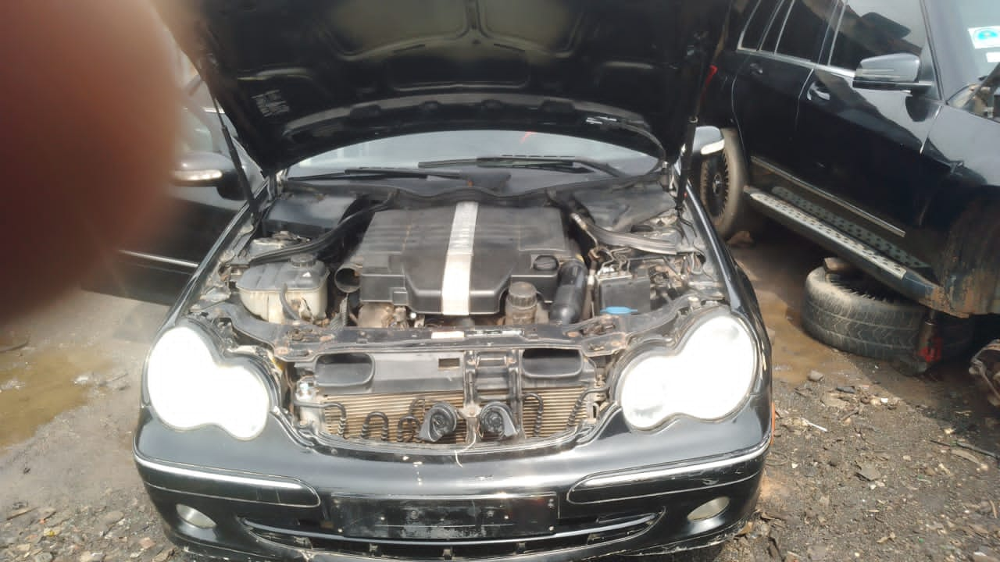
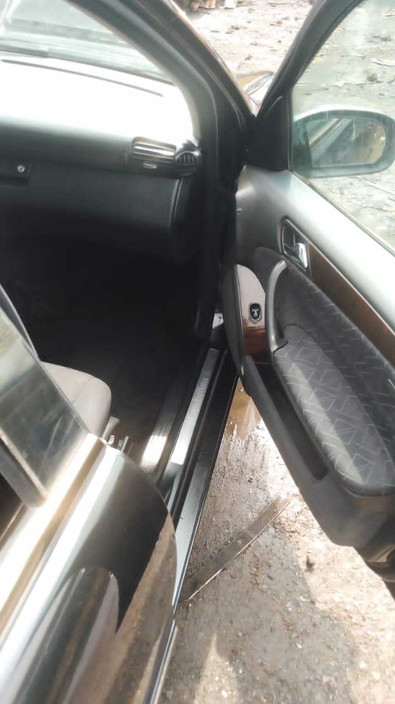
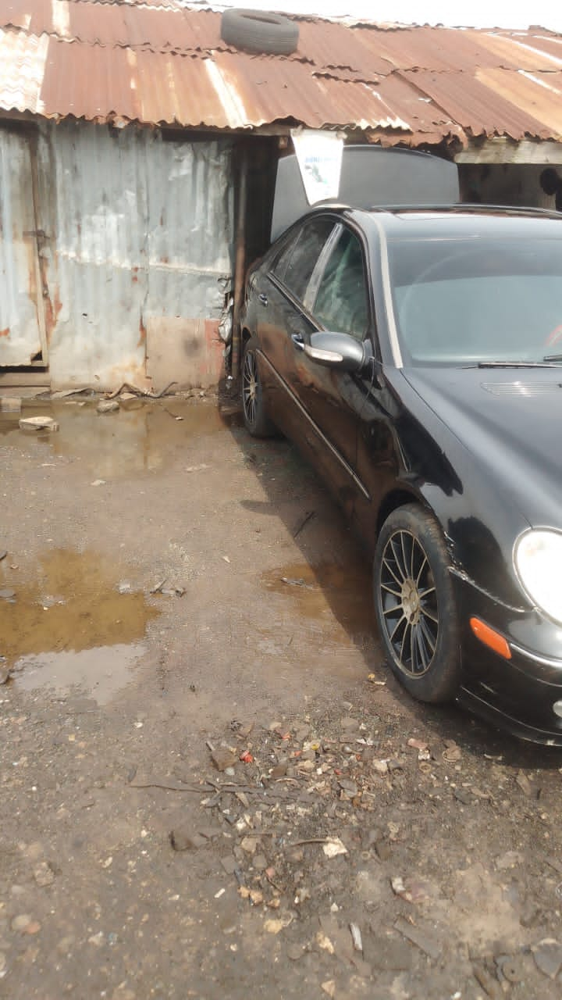

13 photos
Collage
Mercedes-Benz C-Class 203
Second-hand black Benz C-Class 203 with clean cloth interior, automatic transmission, wood trim dashboard, alloy wheels, and visible engine bay inspection photos.
- Black exterior with silver mirror caps
- Neat grey fabric seats and rear cabin
- Engine bay, front, rear, side, and interior photos available